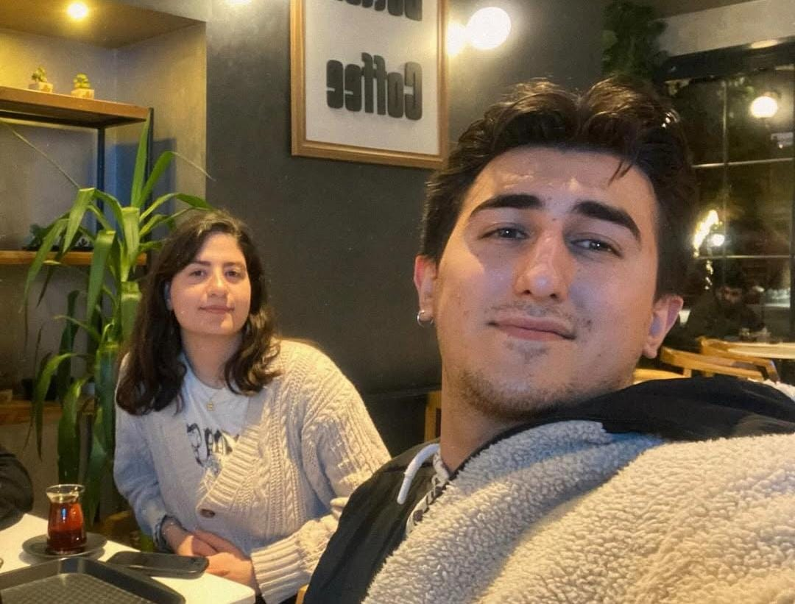

Başlangıç
Aşkım bir nisan akşamı bir rastlantı üzerine denk geldik. Benim hayatımda bu denk geliş kadar mutlu olduğum bir an olmamıştı. O gün senden öylesine etkilendim öylesine gelecek hayalleri kurdum ki. O gün senle hatırlarsın şiirden edebiyattan konuşmuştuk mesela ilk defa o bilgilerin işe yaradığını görmüştüm. İyi ki hayatımın bir noktasında bunları öğrendim ve seni etkileyebildim bu şekilde. Seninle tanıştığımız güne şükürler olsun. SENİ ÇOK SEVİYORUM.